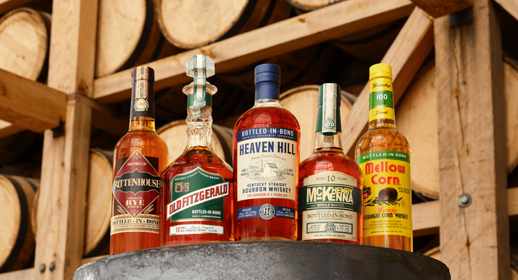

Welcome to the Cocktails page! Here you can find a variety of cocktail information.
Feel free to explore and enjoy your favorite drinks responsibly!
The Old Fashioned -- This is my go to drink when it comes cocktails. I prefer using Heaven Hills Bottled in Bond as the base. This is probably because of I work for them but its just the perfect blend and flavor. Just so I am not biased and not all resurtants carry Heaven Hill Brands portfolio, a close second would be Woodfood Reserves Double Oaked.

The Manhattan -- This is my second favorite cocktail. I prefer using Woodford Reserves Bourbon as the base. I like to use a sweet vermouth and a cherry garnish. This cocktail is perfect for sipping and enjoying the flavors.
The Margarita -- This is my go to cocktail when I am in the mood for something refreshing. I prefer using Lunazul Tequila as the base. I like to use a lime juice and a salted rim. This cocktail is perfect for sipping on a hot day. I also prefer a flavored margarita like mango or peach! This is the perfect summer drink.